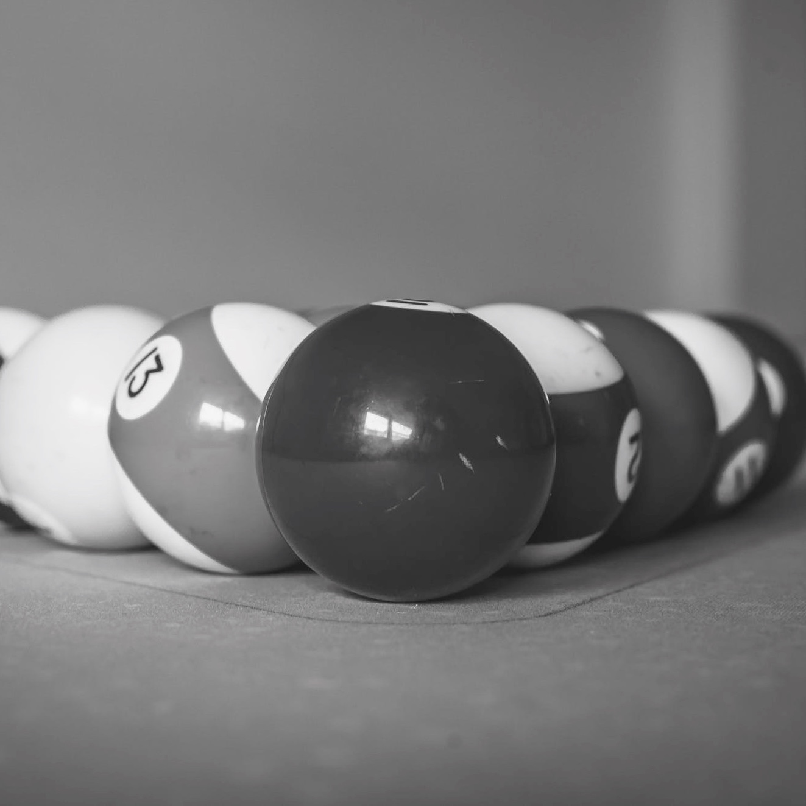

| THE HISTORY OF PLASTIC |

In the second half of the 19th century, the world faced a crisis that was caused by the love of billiards. During that time, billiard balls were made of ivory. The excessive hunting caused elephant populations to decline. Many other things such as piano keys, buttons, combs, glasses frames, and furniture were also made of animal body parts including ivory, ebony and tortoiseshell.
In 1856, Alexander Parkes introduced the world’s first man-made plastic, Parkesine. This plastic was marketed as an alternative to ivory and horn that Parks discovered while trying to develop a synthetic substitute for shellac for waterproofing.Though the product was not a commercial success, Parkesine represented an important first step in the development of man-made plastic.
In 1860 Michael Phelan, “the father of American billiards” offered US$10,000 for the invention of a substitute for ivory. An American, John Wesley Hyatt, acquired Parkes's patent and created celluloid, the first industrial plastic. Although still not solving the billiards ball problem, celluloid could be used as a substitute for many other materials such as coral, tortoiseshell, and mother of pearl.
Although celluloid was waterproof, it was flammable and therefore very dangerous. Scientists started to create alternatives. In 1907 Bakelite, which was less flammable, was created. In 1920, Polystyrene, a spongy plastic used in insulation, was created. Between 1920 to 1930, Vinyl and Acrylic were created. In 1930, Nylon, a polymer designed to mimic silk, was created.
Starting in 1933, polyethylene became one of the most versatile plastics. It was first created in England and was a closely held state secret. Later, it became one of the most popular plastics. Polyethylene was still used today to make everything from water bottles, grocery bags, shampoo bottles, to bulletproof vests.
New manufacturing technologies accompanied this explosion of materials. The invention of a technique called injection-molding made it possible to insert melted plastics into molds of any shape where they would rapidly harden. This created possibilities for products in new varieties and shapes and a way to inexpensively and rapidly produce plastic at scale.
Later, plastics were pushed into service in World War Two. During the war, plastic production in the United States quadrupled. Soldiers wore new plastic helmet liners and water resistant vinyl raincoats. Pilots sat in cockpits made of plexiglass, a shatterproof plastic, and relied on parachutes made of resilient nylon.
Afterwards, plastic manufacturing companies turned their attention to consumer products. Plastics began to replace other materials like wood, glass, and fabric. Versatile plastics opened up possibilities for packaging. Within just a few decades, this multifaceted material ushered in what became known as the “plastics century” which we all live in nowadays.
|FACTS ABOUT PLASTIC POLLUTIONS|
1,600,000
The Great Pacific Garbage Patch covers an approximate surface area of 1.6 million square kilometers – an area twice the size of Texas and three times the size of France.
40%
Billions of pounds of plastic can be found in swirling convergences in the oceans making up about 40 percent of the world’s ocean surfaces.
1,000,000
One million seabirds and 100,000 marine mammals are killed annually from plastic in our oceans.
79%
79% of plastic waste is sent to landfills or the ocean, while only 9% is recycled, and 12% gets incinerated.